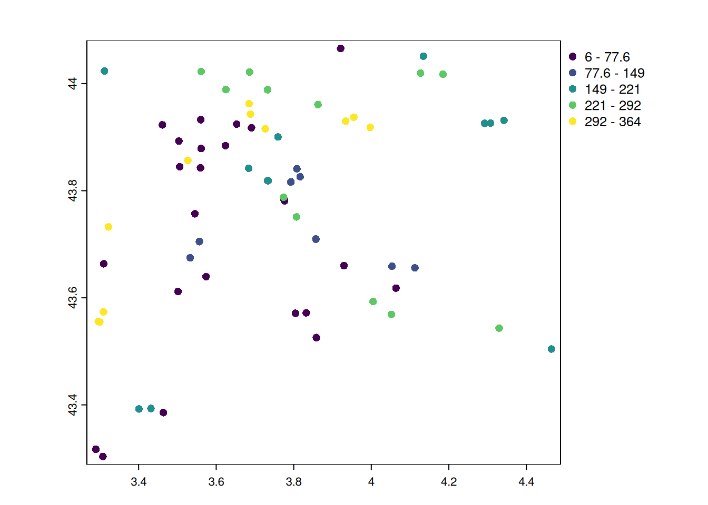

suppressPackageStartupMessages({
library(terra)
library(mapview)
library(here)
library(sf)
})Points
ImportantSummary
This tutorial explores how to handle spatial points in with terra package:
- create a spatial object from a data.frame with
terra::vect()and export it withterra::writeVector()
- make interactive maps with
mapview::mapview()
TipThe ecologist mind
From the otters observations of GBIF, we want to create a map. We will need to create a proper spatial object in .
Setup
If you haven’t done it already, please follow the setup instructions. Let’s start with loading the required packages.
Create spatial points from data.frame
This is the most common case: you have coordinates from a file (csv or excel) and you want to get spatial information about these locations. The first step is to transform the coordinates as proper spatial object in .
We will use a dataset from GBIF with all occurrences of otter recorded in 2021 within a 50km buffer from Montpellier, France. This data was prepared from the tutorial about creating a toy dataset and is stored on Github.
otter <- read.csv(here("data", "gbif_otter_2021_mpl50km.csv"))url_github <- "https://github.com/FRBCesab/spatial-r/raw/main/data/"
pt_otter <- vect(paste0(url_github, "gbif_otter_2021_mpl50km.csv"))dim(otter)[1] 83 14names(otter) [1] "key" "institutionCode"
[3] "species" "occurrenceStatus"
[5] "eventDate" "year"
[7] "month" "day"
[9] "decimalLongitude" "decimalLatitude"
[11] "elevation" "identificationVerificationStatus"
[13] "identifier" "datasetKey" The dataset contains 83 observations of otter (in rows), and 14 variables (in column) such as date, coordinates, and data provider. The geographic coordinates are stored in the columns decimalLongitude, and decimalLatitude. They are expressed in decimal degrees, following the WGS84 coordinate reference system (EPSG:4326).
Important
It is really important to keep track of the projection system of your data. When it is expressed in latitude-longitude and was derived from modern GPS, it is often in WGS84 (EPSG:4326). Problems arise when coordinates are expressed in meters. It can be very complicated to retrieve the projection system if not stored properly with the data.
We have just loaded in R the observations from GBIF, but it is stored in a simple data.frame object, doesn’t know that it contains spatial information yet. Let’s create a spatial object from the coordinates so that we can easily make a map and see where these observation were made.
In terra, the key function for vectors is terra::vect().
pt_terra <- vect(
otter,
geom = c("decimalLongitude", "decimalLatitude"),
crs = "EPSG:4326"
)
# summary of the spatial object
pt_terra class : SpatVector
geometry : points
dimensions : 83, 12 (geometries, attributes)
extent : 3.28983, 4.46447, 43.30373, 44.06548 (xmin, xmax, ymin, ymax)
coord. ref. : lon/lat WGS 84 (EPSG:4326)
names : key institutionCode species occurrenceStatus
type : <num> <chr> <chr> <chr>
values : 3.059e+09 iNaturalist Lutra lutra PRESENT
3.854e+09 UAR PatriNat Lutra lutra PRESENT
3.854e+09 UAR PatriNat Lutra lutra PRESENT
eventDate year month day elevation identificationVerificationStatus
<chr> <int> <int> <int> <int> <chr>
2021-01-24T15:~ 2021 1 24 NA NA
2021-01-13 2021 1 13 NA Probable
2021-01-08 2021 1 8 NA Probable
identifier datasetKey
<chr> <chr>
68608477 50c9509d-22c7-~
5b4c3803-50a9-~ c32f3129-a4dc-~
cc533347-f1e3-~ c32f3129-a4dc-~All the information about the terra::SpatVector object can be retrieve individually with the functions terra::ext() for the geographical extent, terra::crs() for the projection system, and dim() for the dimensions (number of objects, and number of variables in the attribute table).
In sf, the key function is sf::st_as_sf().
pt_sf <- st_as_sf(
otter,
coords = c("decimalLongitude", "decimalLatitude"),
crs = "EPSG:4326"
)
# summary
pt_sfSimple feature collection with 83 features and 12 fields
Geometry type: POINT
Dimension: XY
Bounding box: xmin: 3.28983 ymin: 43.30373 xmax: 4.46447 ymax: 44.06548
Geodetic CRS: WGS 84
First 10 features:
key institutionCode species occurrenceStatus eventDate
1 3058935748 iNaturalist Lutra lutra PRESENT 2021-01-24T15:26:55
2 3853886594 UAR PatriNat Lutra lutra PRESENT 2021-01-13
3 3853886619 UAR PatriNat Lutra lutra PRESENT 2021-01-08
4 3853886780 UAR PatriNat Lutra lutra PRESENT 2021-01-12
5 4546764953 UAR PatriNat Lutra lutra PRESENT 2021-01-31
6 4546968119 UAR PatriNat Lutra lutra PRESENT 2021-01-17
7 4547054813 UAR PatriNat Lutra lutra PRESENT 2021-01-31
8 4548321676 UAR PatriNat Lutra lutra PRESENT 2021-01-23
9 4548484387 UAR PatriNat Lutra lutra PRESENT 2021-01-31
10 4552966259 UAR PatriNat Lutra lutra PRESENT 2021-01-06
year month day elevation identificationVerificationStatus
1 2021 1 24 NA <NA>
2 2021 1 13 NA Probable
3 2021 1 8 NA Probable
4 2021 1 12 NA Probable
5 2021 1 31 NA Probable
6 2021 1 17 NA Probable
7 2021 1 31 NA Probable
8 2021 1 23 NA Probable
9 2021 1 31 NA Probable
10 2021 1 6 NA Probable
identifier datasetKey
1 68608477 50c9509d-22c7-4a22-a47d-8c48425ef4a7
2 5b4c3803-50a9-465a-a1a7-35c4a4d7d508 c32f3129-a4dc-4e36-86d4-a35cc5cfb04d
3 cc533347-f1e3-4cf3-9f55-2c7cf60500de c32f3129-a4dc-4e36-86d4-a35cc5cfb04d
4 3210c6f2-391a-4cc4-b497-b915bbc9d7d4 c32f3129-a4dc-4e36-86d4-a35cc5cfb04d
5 631348e0-646f-41eb-b3c7-01900054c689 256b9877-cef3-4e8e-84e1-f23299c49655
6 754868ad-58ef-41eb-b3c7-01900054452d 256b9877-cef3-4e8e-84e1-f23299c49655
7 771217f4-6470-41eb-b3c7-01900054c695 256b9877-cef3-4e8e-84e1-f23299c49655
8 b00a76e4-907d-41eb-adf1-041006068357 256b9877-cef3-4e8e-84e1-f23299c49655
9 b2343db5-646f-41eb-b3c7-01900054c693 256b9877-cef3-4e8e-84e1-f23299c49655
10 33310104-5041-41eb-bfb5-01900053f23b 256b9877-cef3-4e8e-84e1-f23299c49655
geometry
1 POINT (3.792841 43.81636)
2 POINT (3.46399 43.38562)
3 POINT (3.28983 43.3172)
4 POINT (3.83235 43.57202)
5 POINT (3.46399 43.38562)
6 POINT (3.92099 44.06548)
7 POINT (3.85823 43.52581)
8 POINT (3.57398 43.63949)
9 POINT (3.28983 43.3172)
10 POINT (3.54517 43.75695)All the information about the sf object can be retrieve individually with the functions sf::st_bbox() for the geographical extent, sf::st_crs() for the projection system, and dim() for the dimensions (number of objects, and number of variables in the attribute table).
Map the observations
Once the data is formatted as spatial vector, it can be visualized as static map with the function plot() or interactively with the package mapview.
The function mapview::mapview() creates easily interactive map. If you want to fine tune your map, have a look at this tutorial
mapview(pt_terra)The function plot() .
plot(pt_terra)
In sf, the function plot() visualize the attributes of the vectors by default. If you want a simple map with only the geometry, use st_geometry().
plot(st_geometry(pt_sf), axes = TRUE)
Add new attribute
TipThe ecologist mind
Can we see a temporal pattern in the locations of the otter observations?
Let’s transform the date of the observation as the Julian date. Then we will add this new variable to the attribute table of our spatial object in order to map it.
The date formatting in R is powerful but hard to grasp. Make sure to have a look at the documentations of as.Date() and strptime() if you want more details.
# transform the date as Julian day
julian <- as.Date(pt_terra$eventDate) |> format("%j") |> as.numeric()Now we can attach the Julian day in the spatial object. The attribute table can be accessed as a normal data.frame, and we can create a new column with $.
pt_terra$julian <- julianpt_sf$julian <- julianTo map an attribute in mapview::mapview(), add the parameter zcol with the variable of interest.
mapview(pt_terra, zcol = "julian", layer.name = "Julian date")plot(pt_terra, "julian", type = "continuous", main = "Julian date")
plot(pt_sf["julian"], axes = TRUE)
NoteYour turn
Visually check if there is a bias in the spatial distributions of observations due to data provider (information in the column institutionCode).
Click to see the answer
# with mapview
mapview(pt_sf, zcol = "institutionCode")
# or in terra
plot(pt_terra, "institutionCode")
# or in sf
plot(pt_sf["institutionCode"], axes = TRUE)Export data
For vectors, it is recommended to export them as geopackage file (extension .gpkg). Compare to traditional ESRI shapefile, the geopackage format stores the data in a single file and the column names are preserved.
In terra, the function to export a spatial vector is terra::writeVector().
writeVector(pt_terra, here("data", "gbif_otter_2021_mpl50km.gpkg"))In sf, the function to export a spatial vector is sf::st_write().
st_write(pt_sf, here("data", "gbif_otter_2021_mpl50km.gpkg"))Conversion between sf and terra
It is confusing to have two dominant packages terra and sf with similar functionalities. Luckily, the conversion between the two data formats is easy.
To convert a terra SpatVector vector into a sf simple feature, the function is sf::st_as_sf().
pt_sf <- st_as_sf(pt_terra)To convert a sf simple feature into terra SpatVector, the function is terra::vect().
pt_terra <- vect(pt_sf)
Warning
Non-homogeneous features (GEOMETRYCOLLECTION) can’t be converted in terra as a SpatVector object. In this case, you must homogenize the type of features, and transform them into an accepted format (points, lines or polygons). Check out the functions sf::st_cast() and sf::st_collection_extract() that can help with the transformation.